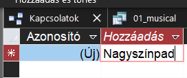
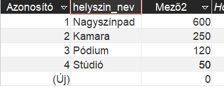

Részletes feladatleírás lépésenként
Ahhoz, hogy ezt ki tudjuk számolni, szükség lesz arra, hogy az egyes helyszíneknek mekkora a befogadóképessége. Ehhez készítünk egy új táblát, ahová bevisszük az adatokat. Azzal számolunk, hogy a kihasználtság 90%, vagyis lényegében minden előadás teltházas, de kiosztunk néhány tisztelet- és szakmai jegyet vagy promóciós jegyeket.
- Új tábla készítése: kattints a Létrehozás fülön a Tábla lehetőségre! Megnyílik egy új, egyelőre üres tábla.

- Adatok bevitele: vigyük be kézzel az adatokat! Figyelj arra, hogy pontosan (a kis- és nagybetűktől eltekintve, ott lehet különbség) ugyanúgy írd a helyszíneket, mint az előadások táblájában van! Alul látod az én megoldásomat, te írhatsz más számokat is, ha azt szeretnéd. Nevezd át a mezőket úgy, hogy duplán rákattintasz. A nevek lehetnek helyszin_nev és ferohely.

- Kapcsolatok beállítása: fontos, hogy a kapcsolatokat is beállítsuk – ezért kell arra figyelni, hogy helyesen írjuk a helyszíneket. Ha még nem zártad be a Kapcsolatok lapot, akkor kattints rá; ha igen, akkor keresd meg az Adatbáziseszközök fülön! Itt a jobb oldalról add hozzá az új táblát is a Kapcsolatokhoz! Húzd össze az Előadások tábla helyszín mezőjét és a Férőhelyek tábla helyszín név mezőjét!
- Lekérdezés összeállítása: készíts egy új lekérdezést! Add hozzá az előadások és a férőhelyek táblát is! Figyelj, hogy megjelenik-e a kapcsolat! A táblázathoz add hozzá a helyszín nevét, bármelyik táblából (mivel ez a kapcsolat alapja, ugyanannak kell lennie mindkettőnek). Kapcsold be az Összesítést!
- Függvény készítése: kattints a második oszlopba, majd a varázspálcára (Szerkesztő)! Írd be ezt a képletet: Sum([Eloadasok]![jegyar]*[Ferohelyek]![ferohely]*0,9)
Ezzel a képlettel minden sorra kiszámolod a jegyárnak és a férőhelyek 90%-ának a szorzatát, majd összeadod őket. Mivel az első oszlop összesítésben tartalmazza a helyszín nevét, eszerint csoportosítva kapod vissza az eredményeket.
- Mentsd a lekérdezést 08_bevetelek néven!
Ez a feladat volt a legnehezebb. Még kettő van hátra, amelyekkel sokkal kevesebb a munka.
 )! Megnyitáskor az Üres adatbázis lehetőséget kell választani (kivéve persze, ha egy már létező adatbázist szeretnél megnyitni máskor). Itt azonnal meg kell adni, hogy hova és milyen néven szeretnéd menteni a fájlt; add meg a fájlnevet (legyen szinhaz.accdb), válassz egy helyet, majd kattints a Létrehozás gombra! Ide kattintva látod, hogy mi micsoda az ablakban.
)! Megnyitáskor az Üres adatbázis lehetőséget kell választani (kivéve persze, ha egy már létező adatbázist szeretnél megnyitni máskor). Itt azonnal meg kell adni, hogy hova és milyen néven szeretnéd menteni a fájlt; add meg a fájlnevet (legyen szinhaz.accdb), válassz egy helyet, majd kattints a Létrehozás gombra! Ide kattintva látod, hogy mi micsoda az ablakban.


 )!
)!